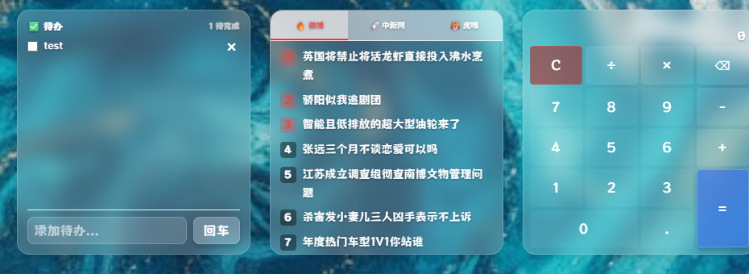
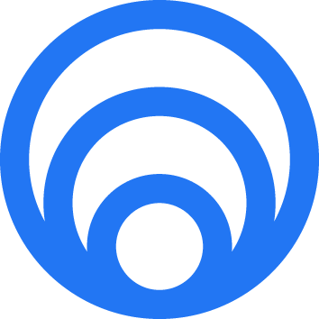
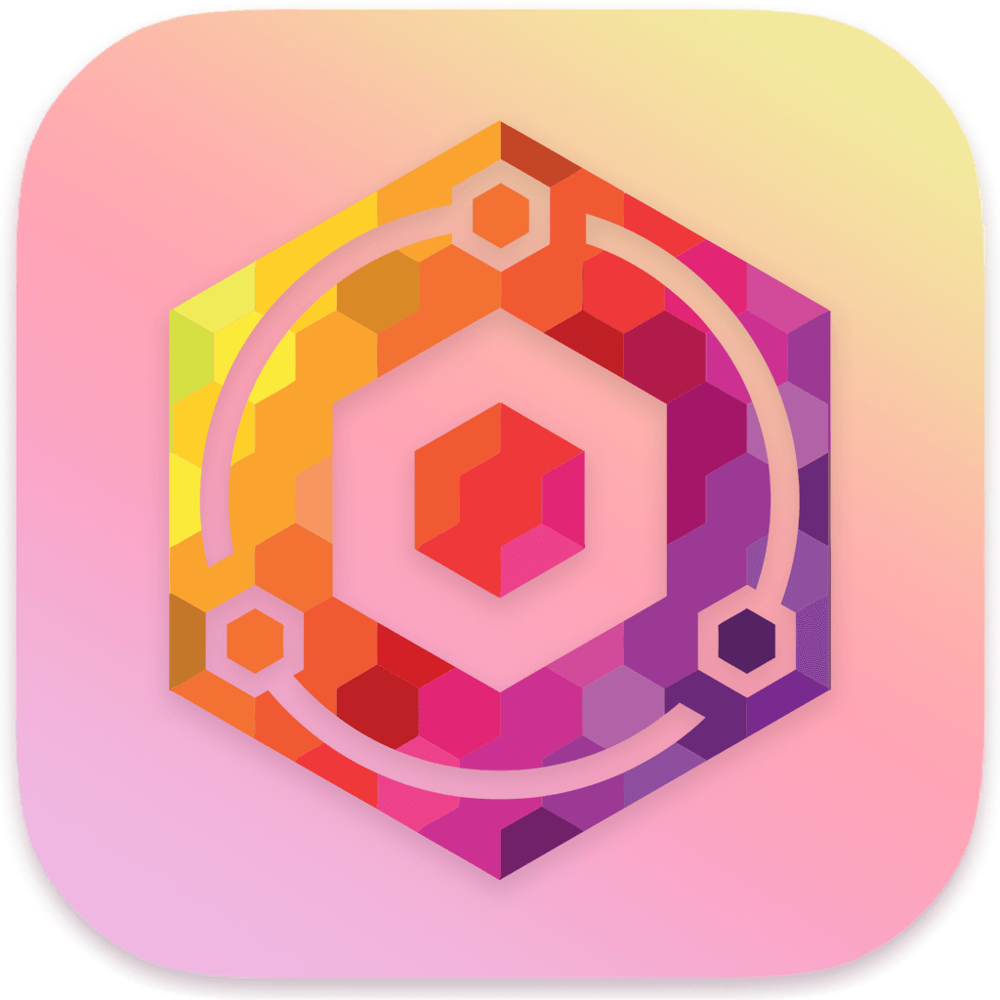

01
自由布局与分组
用网格拖拽组织卡片、组件和书签。常用服务、收藏夹、Docker、PT、影音等场景可以独立分组。
这不是一个只放链接的书签页。StartDeck 提供可拖拽布局、实用组件、本地数据存储和 Go 后端能力，让浏览器首页真正连接你的服务、文件和设备。
用网格拖拽组织卡片、组件和书签。常用服务、收藏夹、Docker、PT、影音等场景可以独立分组。
结合访问来源、域名和延迟判断网络环境，优先跳转到更适合当前设备的内网或公网地址。
内置天气、RSS、热榜、系统状态和自定义组件，把日常信息整理到稳定入口。
查看容器状态，执行启动、停止、重启和镜像升级。常见服务维护可以直接在仪表盘完成。
天气、日历、待办、RSS、热搜、计算器、音乐播放器、系统监控和自定义 HTML 组件开箱可用。
配置与运行数据保存在本地目录，支持备份、迁移和版本保存；Docker 部署也可以挂载持久目录。


把 CasaOS、群晖、飞牛、OpenWRT、qBittorrent、Emby 等服务放进统一桌面。

适配 DDNS、反代、内网穿透、子路径部署等环境，减少“能不能打开”的手动判断。
把 AI 工具、文档、监控、文件临时传输和待办事项放在同一个可定制工作面板。
StartDeck 的重点是实际使用效率：打开浏览器就能看到服务状态、入口、任务和需要处理的内容。
统一整理内网应用、影音服务、下载器、面板和路由器入口。
把本地服务、测试环境、监控、脚本组件和常用工具收束到一个稳定首页。
用 Docker 管理、网络识别和自定义组件，让家庭服务不再散落在多个标签页里。
发布包提供 Docker 镜像与 Debian/Ubuntu 部署脚本。数据目录、音乐目录、文件目录和图标服务数据都可以持久化。
docker run -d \
-p 23000:3000 \
-v $(pwd)/data:/app/Data/data \
-v $(pwd)/icon-service-data:/app/icon-service/data \
-e ICON_SERVICE_DATA_DIR=/app/icon-service/data \
-v /var/run/docker.sock:/var/run/docker.sock \
-e STARTDECK_ADMIN_PASSWORD=admin \
--name startdeck \
qdnas/startdeck:latestwget -O deploy_debian.sh \
https://raw.githubusercontent.com/Garry-QD/StartDeck/main/deploy_debian.sh
chmod +x deploy_debian.sh
sudo ./deploy_debian.sh开源、可自托管、可迁移。发布后可通过 GitHub、Gitee 或 Docker 镜像获取最新版本。